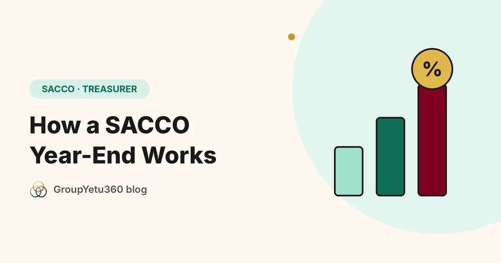

The year ends. The books are closed. Then the questions start. Did we make a surplus? How much? What will I receive on my shares? What about my deposits?
A clear year-end process answers all of these. Here is how it works.
Five steps from surplus to payout
- Work out the surplus. Income for the year, less expenses. Loans that are unlikely to be repaid should be provided for first, so the surplus is honest.
- Set aside the reserve. Most SACCOs put a share of the surplus into reserves before anything is paid out. Your by-laws set the percentage.
- Decide the rates. One rate for the dividend on share capital. One rate for interest on deposits. They must fit within what the surplus allows.
- Take it to the AGM. Members approve the figures. Nothing is paid before approval.
- Credit or pay out. Each member's amount is either added to their account or paid out.
Dividends and interest are not the same
- Dividend is paid on share capital held at the year end.
- Interest is paid on deposits. Fair practice is to use the average balance over the year, not just the balance on the last day.
Why the average? Because a member who deposited a large amount in the last week did not fund your loans all year. Using the year-end balance alone rewards late deposits.
Common year-end mistakes
- Paying before the AGM approves.
- Working out each member's figure by hand, and finding errors at the meeting.
- Ignoring loans in arrears, so the surplus looks bigger than it is.
- Not keeping the calculation, so nobody can explain the figure next year.
How GroupYetu360 handles the year-end
SACCO mode in GroupYetu360 follows the same steps.
- The treasurer enters the surplus, the reserve percentage, the dividend rate and the interest rate.
- The system works out each member's figure from the records. No hand calculation.
- The figures go to the AGM for approval.
- After approval, each amount is credited to the member or paid out, and the withholding tax is applied.
- Reports show the financial position, income and expenditure, and loan ageing with provisions.
SACCO mode is switched on by our team for SACCO groups. Write to us through the website and we will set it up.
This is a general guide, not legal or tax advice. Check your by-laws and the rules that apply to your SACCO.
Frequently Asked Questions
The members, at the AGM. The treasurer and board prepare a proposal based on the surplus.
SACCO mode is built for groups that run share capital, deposits and loans like a SACCO. Smaller chamas can use the standard features.
Rates fall with the surplus. It is better to pay a lower rate than to promise a high one that the group cannot afford.